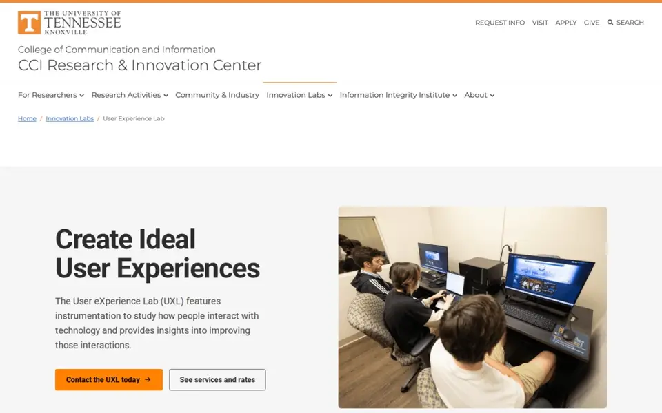
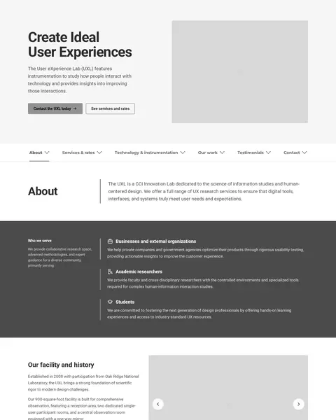
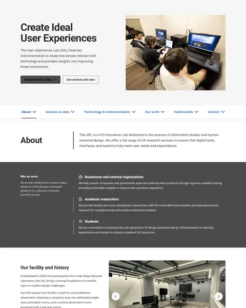
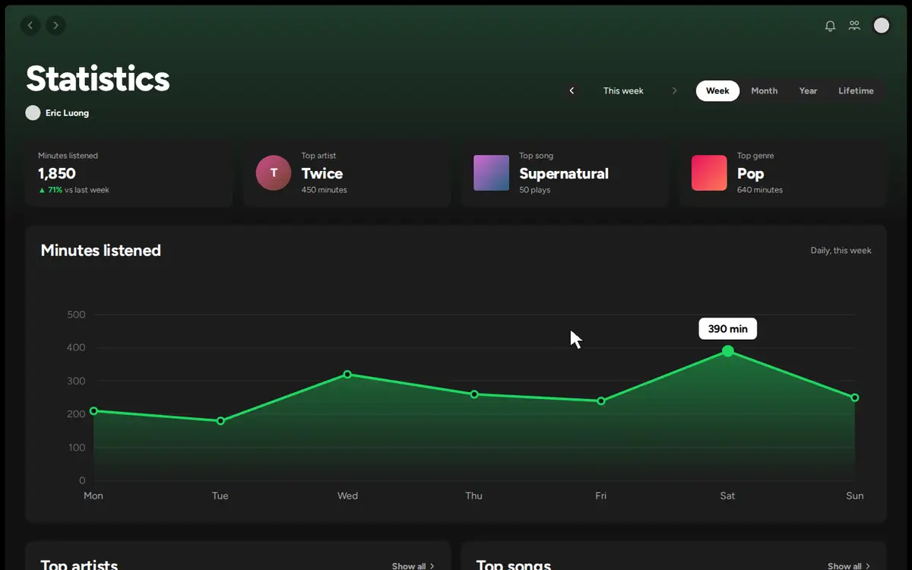
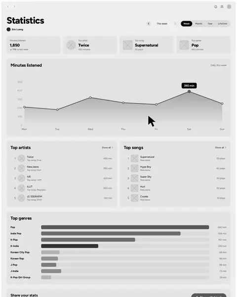
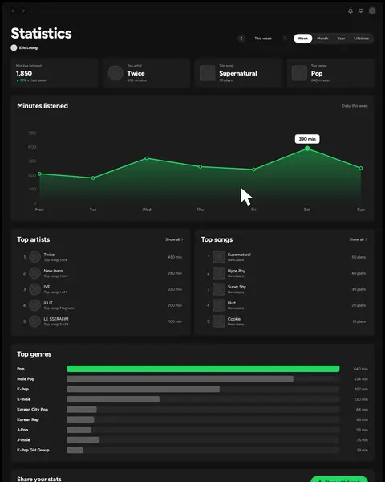

A full website redesign for UTK Innovation Labs that helped the lab connect with new business clients.
My contributions
01Analyzed other university and business UX labs to identify opportunities in business-focused messaging.
02Synthesized research with students, faculty, and past clients to find key pain points.
03Translated research into a full redesign aimed at external business clients.
04Pitched research, design recommendations, and prototypes to UX leadership for approval.
The final redesign
A quick scroll through the redesigned UXL page, from the hero to the contact form.
cci.utk.edu/ric/innovation-labs/uxlab

"The overarching goal of the UXL's public-facing website is to acquire new business."
My internship project was a semester-long UX study of the lab's website. I ran research, interviews, and usability tests to uncover the pain points users were running into, then turned those findings into a full website redesign built to address them.
UX workflow
Discover
User testing and interviews
I ran 9 interviews and usability tests with students, faculty, and former clients to uncover pain points and learn what prospective clients needed to understand about UXL's services.
Competitive analysis and environmental scan
I analyzed 30+ university and business UX lab websites to benchmark UXL's digital presence.
Heuristic and accessibility evaluation
I evaluated the current UXL website against usability heuristics and accessibility guidelines.
Key findings
01
There was no clear way to contact the lab.
Email links opened Outlook or made visitors copy the address. Like many sites I benchmarked, the redesign adds an on-page contact form and more contact buttons.
02
Past work wasn't being showcased.
Without examples of past projects, new clients had a hard time seeing what the lab could do or what working with it looks like.
03
Services and rates were unclear.
Visitors needed a clearer breakdown of what each service includes and what it costs, so the redesign shows rates by audience type.
04
The site needed more description and imagery.
The redesign adds a fuller about section and photos in key sections, like the facility and equipment, to show what the lab offers.
Define
User personas
I created three personas for the three audiences the lab wants to serve: students, academic researchers, and business clients.
Jordan Lee
Undergraduate Student, Information Sciences
Age
20
Audience
Student
Tech comfort
High
Background
·Studying information sciences with a focus on UX design
·Has heard about the UXL through class and wants to explore it for a research project
·Uses university resources regularly but is unfamiliar with how to formally access research labs
Goals
+Learn what tools and equipment the UXL has available
+Understand if the lab is accessible for student use
+Find out how to get involved with ongoing research
Pain points
−No clear indicator or message that students can have access to the lab or its tools
−No examples of past work students have done at the lab
−Unclear if students have to pay to gain access to the lab and its tools
Dr. Patricia Nguyen
Associate Professor, School of Information Sciences
Age
44
Audience
UT Researcher
Tech comfort
Medium–High
Background
·Conducts research on human-computer interaction and information behavior
·Has used the UXL before but needs to revisit services and pricing for a new grant proposal
·Values efficiency and wants quick answers without reading through everything
Goals
+Confirm current equipment availability for a specific study design
+Find accurate UT Researcher pricing to include in a budget
+Quickly identify the right contact person for scheduling
Pain points
−No examples of past work done at the lab to reference for study planning
−No photos of the equipment in use, making it harder to assess whether the setup fits a specific research scenario
Marcus Chen
Product Manager, Regional Healthcare Company
Age
36
Audience
Business Client
Tech comfort
Medium
Background
·Overseeing the redesign of a patient portal and needs usability testing on the new interface
·Has a budget and timeline, and is evaluating multiple research vendors
·No prior experience working with a university research lab
Goals
+Quickly assess whether the UXL can meet his project's research needs
+Understand pricing and what a typical engagement looks like
+Get in touch with someone to discuss scope and timeline
Pain points
−No "how it works" section, so business visitors have no idea what an engagement with the UXL looks like from start to finish
−The page feels academic rather than professional, reducing confidence in the UXL as a commercial research partner
−Credibility markers like the founding year and Oak Ridge affiliation are not communicated prominently
Statements
Problem
Students, researchers, and business clients came to the UXL website with different needs, but it didn't clearly show what the lab offers, what it costs, past work, or how to get in touch, so prospective clients left.
Solution
Redesign the UXL website so every audience can find the lab's services, rates, and past work, and reach the team in a few clicks to win new clients.
Develop
Wireframes and prototyping
01 Wireframe

02 Prototype

Deliver
Presented to leadership
I presented research findings, design recommendations, and interactive prototypes to leadership for review and approval. The designs are being considered for future development and laid the groundwork for a future redesign.
Takeaways
01
Research shapes design decisions
The interviews, usability tests, and competitive analysis gave me evidence behind every change, so the redesign solved real problems instead of assumptions.
02
Balancing many audiences with business goals
Students, researchers, and business clients all needed different things from one page, so I layered content, like the rates toggle, while keeping the lab's goal of winning new clients in mind when deciding what came first.
03
Communicating design to non-technical audiences
Presenting to leadership taught me to explain my process in plain language and connect each design choice back to the lab's goals.
Curious about my work at this internship? Please feel free to reach out to me at luongeric0207@gmail.com.
02 / 03
St. Christopher Truckers Relief Fund
Details
Role
Product Designer
Tools
Figma
Skills
UI/UX Design, Wireframing, Prototyping
Overview
I partnered with another designer to design the application and dashboard interfaces for SCF's “Rigs Without Cigs” program, for both the truckers applying and the staff reviewing their applications.
My contributions
01Redesigned the “Rigs Without Cigs” application from wireframes to high-fidelity prototypes, simplifying enrollment and contributing to a 40% increase in applications.
02Designed admin and trucker dashboards that streamlined application review, approval, and rejection, cutting processing time by 50% for SCF staff.
03Collaborated with a fellow product designer and developers to iterate on the designs, weigh technical feasibility, and hand off final designs for implementation.
Curious about my work on this project? Please feel free to reach out to me at luongeric0207@gmail.com.
03 / 03
Spotify Statistics Page
Details
Role
Product Designer
Tools
Figma
Skills
UX Research, Wireframing, UI Design
Overview
Spotify gives artists a place to share their work with millions of listeners, and gives fans a way to enjoy it. As a longtime Spotify user, one of my biggest gripes is how little of my own listening data I can actually see.
Spotify Wrapped, the personalized summary of each listener's year, made that gap obvious. If Spotify already collects all of this data, why isn't there a page where listeners can explore it throughout the year? This side project is my answer: a statistics page that is always there, not just at the end of the year.
The final design
A quick walkthrough of the statistics page, from switching time ranges to opening the top artists page and sharing stats.
open.spotify.com/statistics

UX workflow
Discover
Context
As a long-time Spotify user, one of my biggest gripes is how little of my listening data I can see. Spotify Wrapped shows a personalized summary of my year, but only once a year. This class project set out to give listeners that data all year long.
User interviews
I interviewed three Spotify users about their opinions on Spotify and what they would want to see on a statistics page.
Interview 1Interview 2Interview 3
Key findings from interviews
01
There was no year-round access to listening stats.
Wrapped only arrives at the end of the year, so listeners had no way to check their stats in between.
02
Past listening data was out of reach.
Listeners couldn't look back at earlier weeks, months, or years to see how their habits changed.
03
Listeners wanted more kinds of statistics.
Beyond the familiar top artists and tracks, they wanted different types of stats, including unique ones they don't usually get to see.
Define
User persona
I created John Lee to represent the listeners who would benefit from and enjoy a statistics page.
John Lee
Student, University of Tennessee Knoxville
Age
20
Location
Knoxville, TN
Hobbies
Fashion, music, soccer
Wants
+More insight into his listening history
+Access to his data year-round
+An engaging experience when browsing statistics
Socials
·Instagram
·Twitter
·TikTok
·Reddit
·Facebook
·Snapchat
Bio
John is a student at the University of Tennessee Knoxville. He is outgoing, loves connecting with people, and enjoys learning more about himself and others. He is active on social media and hopes to work in the industry. He loves artistic activities and diving deeper into his interests, and music is one of them: he loves listening to it and sharing it with other people.
Problems
01
Listeners have no year-round access to their personal listening statistics.
02
There's no way to look back at past statistics and listening history.
03
Spotify misses a chance to keep listeners engaged on the platform.
Solutions
01
A dedicated page where listeners can view and interact with their listening history and data.
02
An interactive interface that lets listeners expand any statistic and choose the time range they want to see.
03
Continuous, year-round access to personal listening data.
Develop
Wireframes and low-fidelity prototype
Every part of the page traces back to a problem from Define: listeners had no year-round access to their stats, couldn't look back at past data, and had little reason to keep coming back.
01 Wireframe

02 Low-fidelity prototype

Design decisions
01
Time range toggle and period arrows
Week, Month, Year, and Lifetime, plus arrows to step back through earlier periods, give listeners year-round access and a way to revisit past listening data whenever they want.
02
Summary tiles
Minutes listened, top artist, top song, and top genre sit at the top so listeners get the answer at a glance before deciding what to explore.
03
Statistics listeners care about most
Minutes listened, top artists, top songs, and top genres reflect what my interviewees wanted to see most. Each one has a format that fits it, like a chart for listening over time and colored bars for genres, and Show all opens a full top 50 for anyone who wants to dig deeper.
04
Share with friends
A shareable stats card encourages engagement and social sharing, giving listeners a reason to come back throughout the year, not just when Wrapped drops.
Deliver
Polishing the design
Coming back to the project, I reworked the page into a dashboard: summary tiles for each statistic, one time range control for week, month, year, and lifetime, a chart that adapts to the range, and lists that expand in place.
Try the prototype
Switch the time range, step back through past periods, open the top 50 pages, and use the arrows to move back and forth.Open this page on a computer to try the interactive prototype.
open.spotify.com/statistics
Statistics
Eric Luong
Minutes listened
T
Top artist
Twice
minutes
Top song
Supernatural
plays
Top genre
Pop
minutes
Minutes listened
,
Top artists
1
T
Twice
Top song: Dive
min
2
N
NewJeans
Top song: Hurt
min
3
I
IVE
Top song: I AM
min
4
I
ILLIT
Top song: Magnetic
min
5
LS
LE SSERAFIM
Top song: EASY
min
Top songs
1
Supernatural
NewJeans
plays
2
Hype Boy
NewJeans
plays
3
Super Shy
NewJeans
plays
4
Hurt
NewJeans
plays
5
Cookie
NewJeans
plays
Top genres
Pop
min
Indie Pop
min
K-Pop
min
K-Indie
min
Korean City Pop
min
Korean Rap
min
J-Pop
min
J-Indie
min
K-Pop Girl Group
min
Share your stats
Send these highlights to friends or post them to your story.
Eric's stats ·
minutes listened
Top artistTwice
Top trackSupernatural
Top genrePop
Share to
Top artists
· Your top 50 artists
#ArtistMinutes listenedTop songTop album
1
T
Twice
Dive
With YOU-th
2
N
NewJeans
Hurt
Get Up
3
I
IVE
I AM
I've IVE
4
I
ILLIT
Magnetic
Super Real Me
5
LS
LE SSERAFIM
EASY
EASY
6
A
aespa
Supernova
Armageddon
7
RV
Red Velvet
Psycho
The ReVe Festival: Finale
8
B
BLACKPINK
Pink Venom
Born Pink
9
SC
Sabrina Carpenter
Espresso
Short n' Sweet
10
OR
Olivia Rodrigo
vampire
GUTS
11
L
Laufey
From The Start
Bewitched
12
S
SZA
Snooze
SOS
13
FO
Frank Ocean
Pink + White
Blonde
14
D
Day6
Welcome to the Show
Fourever
15
SK
Stray Kids
LALALALA
ROCK-STAR
16
S
SEVENTEEN
God of Music
SEVENTEENTH HEAVEN
17
G
(G)I-DLE
Queencard
I feel
18
S
STAYC
Teddy Bear
Teddy Bear
19
KO
KISS OF LIFE
Midas Touch
Midas Touch
20
B
BABYMONSTER
SHEESH
BABYMONS7ER
21
TS
Taylor Swift
Cruel Summer
Lover
22
AG
Ariana Grande
we can't be friends
eternal sunshine
23
BE
Billie Eilish
BIRDS OF A FEATHER
HIT ME HARD AND SOFT
24
CR
Chappell Roan
Good Luck, Babe!
Good Luck, Babe!
25
J
Jungkook
Seven
GOLDEN
26
J
Jennie
You & Me
You & Me
27
WT
wave to earth
seasons
0.1 flaws and all.
28
H
Hyukoh
TOMBOY
23
29
D
DEAN
instagram
instagram
30
C
Crush
Rush Hour
Rush Hour
31
YB
Yerin Baek
Square
Every letter I sent you.
32
B
BIBI
Bam Yang Gang
Lowlife Princess
33
TY
Tatsuro Yamashita
Sparkle
For You
34
MT
Mariya Takeuchi
Plastic Love
Variety
35
FK
Fujii Kaze
Shinunoga E-Wa
HELP EVER HURT NEVER
36
Y
YOASOBI
Idol
Idol
37
KY
Kenshi Yonezu
KICK BACK
KICK BACK
38
J
Joji
Glimpse of Us
SMITHEREENS
39
K
keshi
LIMBO
GABRIEL
40
N
NIKI
Every Summertime
Shang-Chi
41
B
beabadoobee
Glue Song
Beatopia
42
C
Clairo
Juna
Charm
43
SL
Steve Lacy
Bad Habit
Gemini Rights
44
DC
Daniel Caesar
Always
NEVER ENOUGH
45
TT
Tyler, The Creator
See You Again
Flower Boy
46
DC
Doja Cat
Paint The Town Red
Scarlet
47
E
ENHYPEN
XO
ROMANCE : UNTOLD
48
T
TXT
Deja Vu
minisode 3
49
I
ITZY
UNTOUCHABLE
BORN TO BE
50
Z
Zion.T
Snowman
Snowman
Top songs
· Your top 50 songs
#TitleAlbumPlays
1
Supernatural
NewJeans
Supernatural
3:11
2
Hype Boy
NewJeans
NewJeans 1st EP 'New Jeans'
2:59
3
Super Shy
NewJeans
NewJeans 'Super Shy'
2:35
4
Hurt
NewJeans
NewJeans 1st EP 'New Jeans'
2:58
5
Cookie
NewJeans
NewJeans 1st EP 'New Jeans'
3:56
6
Right Now
NewJeans
Supernatural
2:40
7
How Sweet
NewJeans
How Sweet
3:39
8
OMG
NewJeans
NewJeans 'OMG'
3:32
9
Ditto
NewJeans
Ditto
3:06
10
Dive
Twice
With YOU-th
3:01
11
I AM
IVE
I've IVE
3:04
12
Magnetic
ILLIT
Super Real Me
2:40
13
EASY
LE SSERAFIM
EASY
2:43
14
Supernova
aespa
Armageddon
2:58
15
Espresso
Sabrina Carpenter
Short n' Sweet
2:55
16
ONE SPARK
Twice
With YOU-th
2:47
17
HEYA
IVE
IVE SWITCH
2:51
18
Psycho
Red Velvet
The ReVe Festival: Finale
3:30
19
Pink Venom
BLACKPINK
Born Pink
3:07
20
Juna
Clairo
Charm
3:44
21
From The Start
Laufey
Bewitched
2:49
22
Snooze
SZA
SOS
3:21
23
Pink + White
Frank Ocean
Blonde
3:04
24
seasons
wave to earth
summer flows 0.02
4:16
25
Plastic Love
Mariya Takeuchi
Variety
7:54
26
Cherries Jubiles
Yerin Baek
Every letter I sent you.
4:03
27
AEAO
DYNAMICDUO
AEAO
3:20
28
For Lovers
Lamp
Ramune
4:11
29
Welcome to the Show
Day6
Fourever
3:22
30
LALALALA
Stray Kids
ROCK-STAR
3:05
31
Queencard
(G)I-DLE
I feel
2:41
32
Teddy Bear
STAYC
Teddy Bear
3:06
33
Midas Touch
KISS OF LIFE
Midas Touch
2:43
34
SHEESH
BABYMONSTER
BABYMONS7ER
2:54
35
Cruel Summer
Taylor Swift
Lover
2:58
36
we can't be friends
Ariana Grande
eternal sunshine
3:48
37
BIRDS OF A FEATHER
Billie Eilish
HIT ME HARD AND SOFT
3:30
38
Good Luck, Babe!
Chappell Roan
Good Luck, Babe!
3:38
39
Seven
Jungkook
GOLDEN
3:04
40
Sparkle
Tatsuro Yamashita
For You
7:13
41
Shinunoga E-Wa
Fujii Kaze
HELP EVER HURT NEVER
3:05
42
Idol
YOASOBI
Idol
3:33
43
Glimpse of Us
Joji
SMITHEREENS
3:53
44
Glue Song
beabadoobee
Beatopia
2:15
45
Bad Habit
Steve Lacy
Gemini Rights
3:52
46
Always
Daniel Caesar
NEVER ENOUGH
3:44
47
See You Again
Tyler, The Creator
Flower Boy
3:00
48
Paint The Town Red
Doja Cat
Scarlet
3:51
49
XO
ENHYPEN
ROMANCE : UNTOLD
3:01
50
Snowman
Zion.T
Snowman
3:27
Takeaways
01
Plan before designing
Defining the problem, goals, and user needs before wireframing gave every later decision a clear reason.
02
Stay in low fidelity longer
Next time I would spend more time sketching and wireframing before settling on colors and typography, because planning the information architecture, user flows, and interactions is what matters most.
03
Balance usability and aesthetics
Good design pairs an interface that is easy to use with one that looks good, and each should support the other.